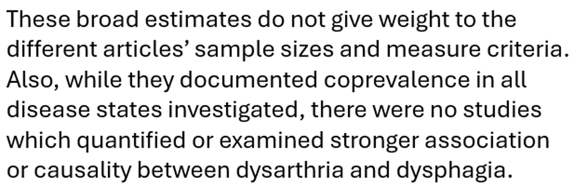

目的：
1.嚥下障害（dysphagia）に関連する構音障害（dysarthria）に関する文献を検討し、構音障害が嚥下障害の存在を強く予測する要因であるという仮説を立てます。
2.最終的な目標は、構音障害指数（dysarthria index）を活用して、口腔・咽頭嚥下障害の存在をスクリーニングし、患者の誤嚥や栄養不足のリスクを評価する能力を得ることです。
方法：
1.PubMedデータベースを使用して、1995年6月から2015年6月までの期間に発表された構音障害（dysarthria）と嚥下障害（dysphagia）に関連するすべての記事について包括的な文献レビューを実施しました。
2.系統的文献レビューは、PRISMA（Systematic Reviews and Meta-Analysesのための推奨報告項目）ガイドラインに従って行われました。
3.構音障害に関する検索用語としては、「dysarthria」「motor speech」「articulation」「anarthria」を使用しました。
4.嚥下障害に関する検索用語としては、「dysphagia」「odynophagia」「globus」「deglutition」「swallowing」を使用しました。
5.個々の検索用語は「OR」ステートメントで結合し、構音障害と嚥下障害の検索結果は「AND」ステートメントでリンクしました。検索基準は「タイトル/アブストラクト」内容に限定しました。
6.1995年6月以前に発表された記事など、20年間のタイムフレーム外で発表された記事は除外しました。
7.また、レビュー記事、コメント記事、単一症例研究は対象外としました。
結果：
1.初回のPubMed検索では1,056件の記事が確認されましたが、最終的に24件の記事が分析対象として残りました。
（図1 にPRISMAフローチャートのプロセスを示しています。）
2.神経変性疾患と脳血管疾患（例えば脳卒中）の病因が大きく異なる可能性があるため、記事を2つの別々の表に整理しました。
（包括基準および除外基準をすべて満たした24件の記事のうち、神経筋疾患に関する13件は表1 に、
脳血管疾患、外傷性脳損傷（TBI）、および脳性麻痺に関する12件は表2 に要約および分類されています。）
3.脳血管疾患および脳性麻痺に関する記事は12件でした。（表3 に本レビューに含まれた24件の記事の疾患分布を示しています。）
(本レビュー対象の24件の記事のうち、15件が観察による構音障害の評価を行い、5件が客観的評価を行い、4件は評価方法が明記されていませんでした。)
4.嚥下障害の評価については、1件が自己申告、10件が観察評価、10件が客観的評価、3件は評価方法が明記されていませんでした。（表4 に、本レビューで取り上げた構音障害および嚥下障害の評価方法を自己申告、観察、客観的評価に分類して示しています。）
5.神経筋疾患の集団において、対象者の規模はn=9～500であり、構音障害の有病率は26～100%（平均63%）、嚥下障害の有病率は10～100%（平均55%）でした。
6.主に非神経筋疾患のグループでは、対象者の規模はn=68～1,259であり、構音障害の有病率は14～100%（平均57%）、嚥下障害の有病率は9～73%（平均41%）でした。
7.研究デザインの多様性により、適切なメタアナリシスを実施することはできませんでした。

結論：
神経筋疾患において、構音障害は嚥下障害の存在を示す重要な臨床的手がかりとなります。
しかし、現行の文献には構音障害と嚥下障害に関する重大な制約が存在し、両者の関連性についての議論が始まったばかりです。
この患者群において、構音障害と口腔・咽頭嚥下障害に関連する誤嚥リスクを評価するための、より正式なスクリーニングツールの開発が強く望まれます。